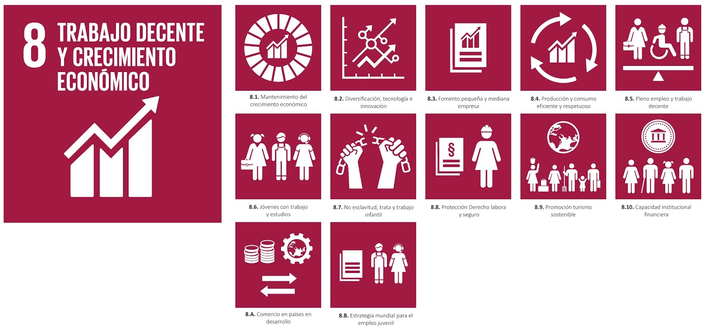
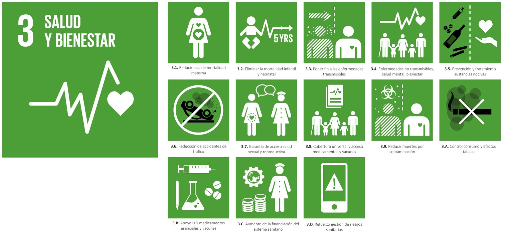
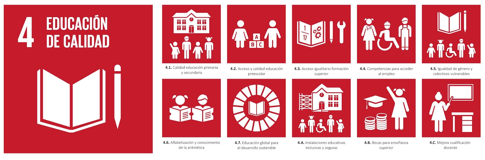
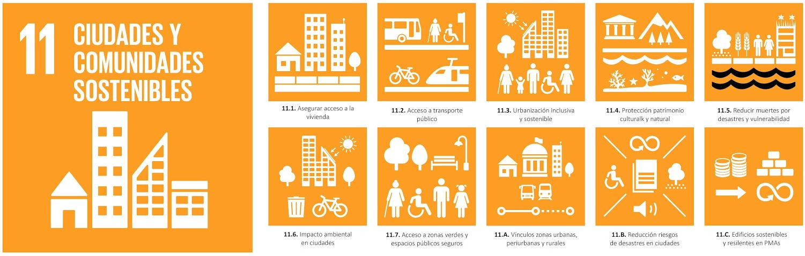

ODS 8 : Trabajo Decente y Crecimiento Económico
Objetivo principal del ODS 8
El objetivo principal del ODS 8, según la ONU, es impulsar el crecimiento económico sostenible e inclusivo, fomentando empleos estables, productivos y con condiciones laborales justas para todas las personas.

En otras palabras, busca que las economías crezcan de manera equilibrada y responsable, generando trabajos dignos, con buenos salarios y seguridad sin perjudicar al medio ambiente.
El vínculo del ODS 8 con la Agenda 2030 se basa en que forma parte del compromiso global para conseguir un desarrollo sostenible. Contribuye a mejorar la calidad de vida, reducir las desigualdades y fortalecer la economía.
Promover el trabajo decente y el crecimiento económico responsable apoya a alcanzar la meta principal de la Agenda 2030.
Conexión del ODS 8 con la tecnología y la informática
El ODS 8 está muy ligado a la tecnología y la informática, ya que los avances tecnológicos impulsan el crecimiento económico. Gracias a la infromática, las empresas pueden modernizarse, automatizar tareas y ser más eficientes, lo que mejora la productividad y genera empleo.
El sector tecnológico también crea muchos puestos de trabajo en áreas como la programación, la cibersefuridad o el análisis de datos. Además, la tecnología mejora las condiciones laborales, al permitir el teletrabajo, la formación online y una mayor seguridad en el trabajo.
En conjunto, la infrmática contribuye a un crecimiento económico más justo y sostenible.
Retos ambientales y sociales del crecimiento sostenible
Contaminación y uso excesivo de recuros naturales
- Problemas ambientales y sociales que dificultan alcanzar un crecimiento económico y sostenible
- Muchas actividades económicas siguen contaminando y gastando más recursos de los que el planeta puede regenerar.
- El gran reto es conseguir que la economía siga creciendo, pero de forma responsable, reduciendo el impacto ambiental.
- Influencia de la actividad tecnológica en este problema
- La actividad tecnológica puede tener un impacto negativo cuando se fabrican y desechan dispositivos electrónicos de una manera descontrolada ya que generan residuos y contaminación, debe tener una gestión adecuada.
- También puede tener un impacto positivo en el desarrollo de tecnologías limpias, energía renovable y sistema que ayuda a reducir el consumo de recursos.
- En los sectores productivos, con una inversión inicial y una formación del personal, la tecnología permite alcanzar procesos y hacerlos sostenibles.
- Soluciones tecnológicas que ayudan a mitigar los impactos
- Solución: Incorporar tecnologías sostenibles, como el uso de energía renovables (solar, eólica) y sistemas inteligentes de control del consumo energético.
- Conclusión: La digitalización y el uso de tecnología verde permiten reducir el impacto ambiental sin frenar el crecimiento económico.
Desigualdad en el acceso al empleo y a la formación
- Problemas ambientales y sociales que dificultan alcanzar un crecimiento económico y sostenible
- No todas las personas tienen las mismas oportunidades para acceder a un trabajo o para formarse en las nuevas tecnologíoas que existe en el mercado.
- Hay desigualdad entre hombre y mujeres, jóvenes y aduyltos, e incluso entre regiones. Estas diferencias suelen deberse a la falta de educación de calidad, la pobreza o la falta de recursos tecnológicos en algunas zonas.
- El reto es ofrecer igualdad de oportunidades laborales y educativas, para que al menos todos tengamos las mismas posibilidades.
- Influencia de la actividad tecnológica en este problema
- Socialmente la tecnología puede aumentar las desigualdades ya que no toda la población tiene acceso a unaa formación digital y los recursos necesarios para poder formarse.
- Por otro lado, también tiene un aspecto positivo, ya que facilita la formación online, el trabajo a distancia y nuevas oportunidades laborales para personas que antes no podía llegar a ellas
- En el sector productivo, las empresas tecnológicas impulsa la economía digital y crean empleos, aunque necesitan profesionales preparados.
- Soluciones tecnológicas que ayudan a mitigar los impactos
- Solución: Fomentar la formación online y gratuita. Además impulsar el teletrabajo.
- Conclusión: La tecnología puede reducir las desigualdades si se usa para acercar la educación y el empleo a todos, garantizando una inclusión digital.
Automatización y pérdida de empleos tradicionales
- Problemas ambientales y sociales que dificultan alcanzar un crecimiento económico y sostenible
- Aunque la digitalización y la inteligencia crean nuevos puestos de trabajo tambien hace desaparecer a otros más tradicionales.
- El reto es adaptarla formación profesional y las políticas de empleo para que las personas puedan adaptarse y aprovechar los nuevos cambios que trae la tecnología.
- Influencia de la actividad tecnológica en este problema
- La automatización y la inteligencia artificial puede tener un impacto negativo al sustituir trabajo manuales o repetitivos, provocando desempleo en algunos sectores.
- Al mismo tiempo, puede tener un impacto positivo porque generan nuevos tipos de empleo relacionados con la programación, el análisis de datos o la ciberseguridad.
- En cuanto a los sectores productivos, la tecnología está cambiando la forma de trabajar. El reto está en adaptarse a este cambio. Las empresas deben invertir en formación mientras las personas deben adquirir competencias digitales
- Soluciones tecnológicas que ayudan a mitigar los impactos
- Solución: Crear programas de reciclaje profesional y formación en áreas tecnológicas, como programación... También se puede plataformas que ayuden conectar trabajadores con nuevas oportunidades digitales.
- Conclusión: La automatización no tiene porque destruir empleo ya que bien gestionada puede generar nuevas profesiones y sectores productivos avanzados. Pero la empresa y las personas deben adaptarse a los cambios tecnológicos
Casos reales e inciativas destacadas
Muchas empresas tecnológicas estan apostando por el uso de energías renovables y la eficiencia energética. Por ejemplo: Google y Microsoft que han invertido en centro de datos alimentados con energía solar y eólica reduciendo su consumo eléctrico y sus emisiones de CO3. Este tipo de acciones demuestra que la tecnología puede ser parte de la solución frente a la contaminación y el uso excesivo de recursos.
En la desigualdad, en el acceso al empleo y a la formación, existen plataformas como Cousera o Google Activate, que ofrecen cursos gratuitos sobre programación, competencia digitales y desarrollo web. En los cuales puedes formarte desde casa y acceder a empleos mejor cualificados.
Sobre la automatización y la pérdida de empleo tradicionales, hay empresas que están impulsando el reciclaje profesional de sus trabajadores. Por ejemplo: IBM y Amazon Web Services que tienen programas para preparar a sus empleados creando nuevos perfiles profesionales
Indicadores para medir el progreso del ODS 8
Para saber si se está cumpliendo el ODS 8 es necesario utilizar indicadores que reflejen el avance en el empleo, la productividad y la sostenibilidad del crecimiento económico.
Alguno de los principales indicadores que usa la ONU para medir el progreso del ODS 8 son: - Tasa de crecimiento del PIB real por persona y trabajador: mide si la economía de un pais está creciendo de una forma sostenible y si las personas profucen más con su trabajo - Tasa de empleo: indica cuantas personas en edad de trabajar tienen un empleo. Si el porcentaje sube implica que hay más oportunidades laborales - Proporción de jovenes que no estudian ni trbajan (jovenes "ninis"): refleja la dificultad que tienen algunos jóvenes para acceder a la educación o al empleo. Es calve para reducir la cifra para el desarrollo. - Porcentaje de trabajadores con empleo informal: mide cuantas personas trabajan sin contrato ni protección laboral. Un número bajo indica trabajo más seguros y con derechos. - Tasa de accidentes laborales: evalúa la seguridad en el trabajo. Si disminuye, significa que las condiciones laborales son seguras y saludables
Tabla resumen
| PROBLEMA | IMPACTO | SOLCUIONES TECNOLÓGICAS |
|---|---|---|
| Contaminación y uso excesivo de recursos naturales | Impactos negativos: - Fabricación y desecho de dispositivos electrónicos da lugar a residuos y contaminación Impactos positivos: - Tecnologías limpias y energías renovables reducen el consumo de energía |
- Uso de energías renovables (solar, eólica) - Sistemas inteligentes de control de consumo energético |
| Desigualdad en el acceso al empleo y a la formación | Impactos negativos: - No todos tienen acceso a formación digital ni a recursos tecnológicos. - Aumenta las desigualdades sociales Impactos positivos: - Formación online y teletrabajo amplía las oportunidades laborales |
- Fomentar la formación online y gratuita - Impulsar el teletrabajo |
| Automatización y pérdida de empleos tradicionales | Impactos negativos: - Sustitución de trabajo manuales o repetitivos da lugar al desempleo en algunos sectores Impactos positivos: - Nuevos empleos en programación, análisis de datos... |
- Programas de reciclaje profesional - Formación de áreas tecnológicas como programación, IA... |
Otros ODS relacionados
El ODS 3 (salud y bienestar) se relaciona con el ODS 8, porque si al gente está sana puede trabajar mejor, conseguir buenos empleos y apoyar el crecimiento económico. (Clic en la imagen para más información sobre el ODS 3)

El ODS 4 (Educación de calidad) se relaciona con el ODS 8, porque la educación ayuda a que las personas consigan trabajos de calidad y bien remunerados, lo que impulsa el crecimiento económico. (Clic en la imagen para más información sobre el ODS 4)

El ODS 11 (ciudades sostenibles) se relaciona con el ODS 8, porque tener ciudades seguras y bien organizadas ayuda a que haya más trabajo y a que la economía mejore. (Clic en la imagen para más información sobre el ODS 11)
